4 - Créer un dictionnaire de variables/modalités
Lorsque les corpus d'entretiens atteignent une certaine dimension, il devient particulièrement utile d'y associer une base de données qui décrit les répondants des entretiens sur la base de variables/modalités standardisées.
Concrètement, Sonal vous permet de créer une sorte de « formulaire » à remplir pour chaque entretien afin de stocker des informations utiles sur les répondants, la date et le contexte de l'entretien, etc.
Cela n'exclut pas d'ajouter des mémos relatifs aux entretiens pour conserver toutes les informations utiles, mais l'intérêt d'une base de données est que Sonal pourra ensuite s'appuyer sur ces données pour vous donner une vue d'ensemble de votre échantillon, ou encore pour filtrer les réponses en fonction des caractéristiques des locuteurs. Les informations que vous stockerez permettront également d'habiller les citations que vous exporterez du logiciel.
4.1 Accéder à la base de données
Les informations relatives aux répondants sont accessibles à différents endroits. Vous pouvez les créer ou les éditer lors du nettoyage ou du codage d'une transcription, dans le mode « variables ». Vous les verrez aussi dans le panneau latéral décrivant chaque entretien dans le corpus. Mais au commencement d'une recherche, le plus simple est sans doute de définir les grandes variables qui seront mobilisées dans votre enquête en allant dans la fenêtre « Base de données » ouverte en cliquant sur le bouton du même nom.
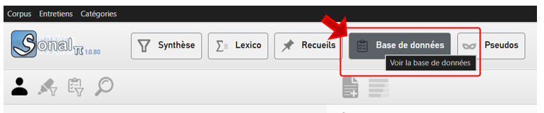
Vous arrivez alors sur une interface qui liste les entretiens en lignes et les variables de la base de données en colonnes. Au premier chargement, vous ne verrez logiquement que les noms de vos entretiens.
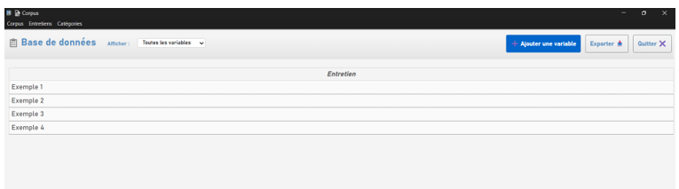
4.1.1 Ajouter une nouvelle variable
Pour ajouter une nouvelle variable à votre base de données, cliquez sur « ajouter une variable ». Sonal va vous demander un certain nombre d'informations.
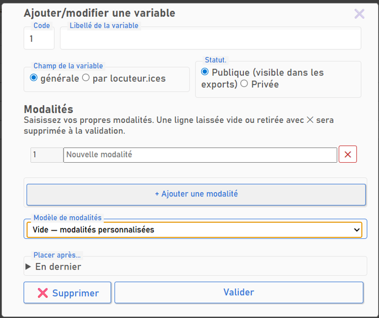
4.1.1.1 Choisir un libellé de variable
Le libellé de la variable figurera en tête de colonne et dans les exports depuis le logiciel. Il n'est pas utile qu'il soit trop long.
4.1.1.2 Définir le champ de la variable
Les variables peuvent soit décrire tout l'entretien, soit chaque locuteur pris séparément . Si vos entretiens sont systématiquement en face à face et que vous êtes seul·e à les réaliser, cela revient au même, mais dès lors qu'il y a plusieurs répondants, comme dans un focus group, et/ou plusieurs interrogateurs, les variables par locuteur sont utiles.
Dans la vue générale de la base de données, les variables générales sont positionnées en premier, à gauche, les variables locuteurs à droite à la suite.
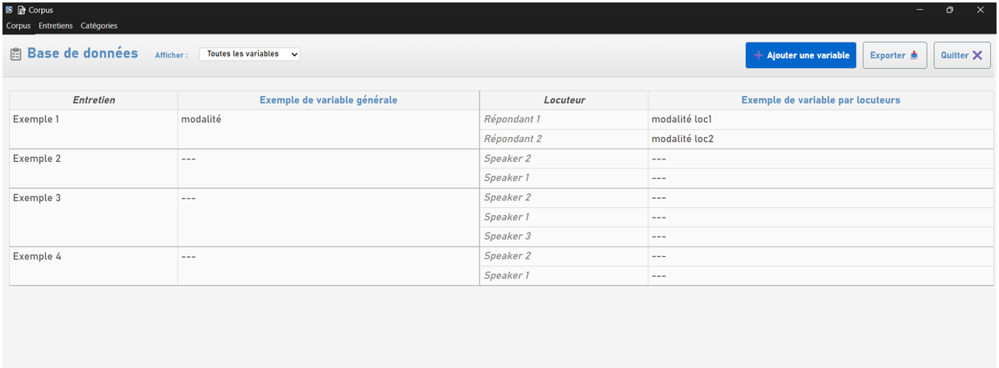
4.1.1.3 Définir le niveau de publicité de la variable
Sonal distingue les variables « publiques » des variables « privées ». Seules les variables publiques sont visibles dans les exports issus du logiciel. Les variables publiques habillent également les citations d'entretiens copiées et collées depuis le logiciel.
Un extrait issu de Sonal aura par exemple cette apparence :
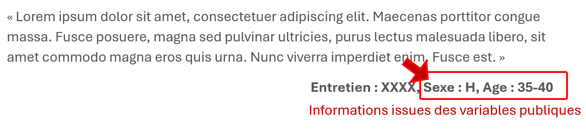
4.1.1.4 Ajouter des modalités
Dans Sonal, vous pouvez ajouter des modalités très simplement en les saisissant directement dans la base de données. Placez-vous dans la cellule correspondante, saisissez la modalité puis validez avec entrée. Elle sera dorénavant disponible pour d'autres cases de la même colonne.
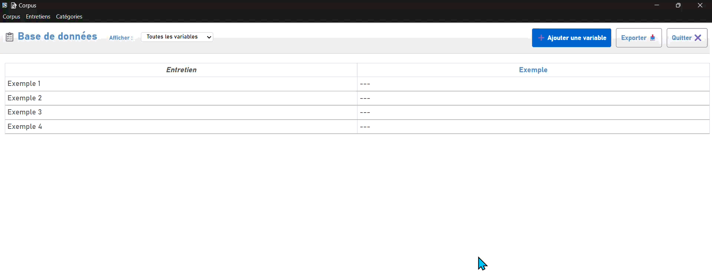
Bon à savoir : Logiquement, le dictionnaire des modalités les fera apparaître dans l'ordre où vous les aurez ajoutées. Par exemple, si votre premier répondant a plus de 65 ans et le second moins de 20, l'ordre d'affichage des modalités pourra paraître incohérent. Donc, si votre variable est ordinale, il peut être plus « propre » de rentrer les modalités directement dans le bon ordre. Pour ce faire, remplissez directement les différentes modalités possibles de votre variable lors de la création.
4.1.1.5 Utiliser un modèle de variable préconçu
Pour vous faire gagner du temps, Sonal vous propose quelques modèles de variables prêtes à l'emploi, comme Sexe, Age ou PCS, ce qui vous évite de taper toutes les modalités une à une.
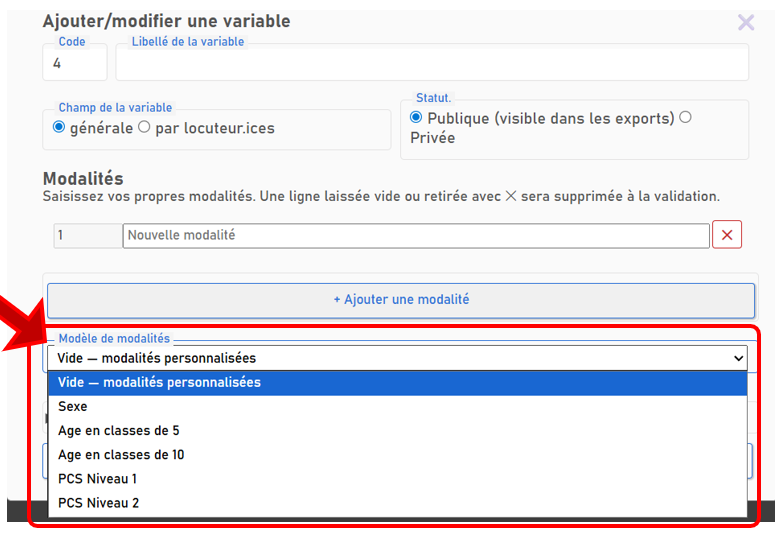
4.1.1.6 Définir la position de la variable
L'ordre d'affichage des variables est lié à leur ordre d'ajout, mais vous pouvez avoir besoin de les ordonner différemment. Vous pouvez, lors de l'ajout ou de l'édition d'une variable, choisir de la placer à un endroit particulier dans la liste, concrètement dans une « colonne » donnée.
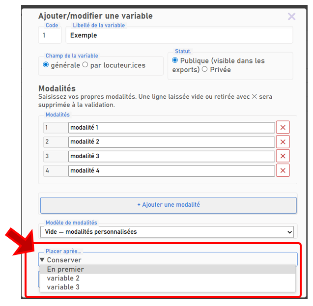
Bon à savoir : Les variables générales et par locuteurs sont triées séparément. Les variables publiques en premier, les variables par locuteurs en second. Cela veut dire que vous ne pouvez pas déplacer une variable locuteur avant une variable publique.
4.2 Modifier une variable
Dans la fenêtre de base de données, les variables sont modifiables en cliquant sur l'en-tête de colonne. Le menu de création et d'édition s'ouvre alors pour modification.
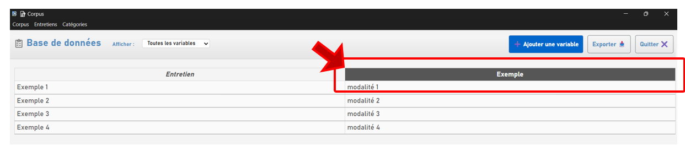
Vous pouvez également le faire depuis la fenêtre d'édition des entretiens en cliquant sur le libellé de la variable. La fenêtre d'édition des variables s'ouvre alors et vous permettra de modifier la variable.
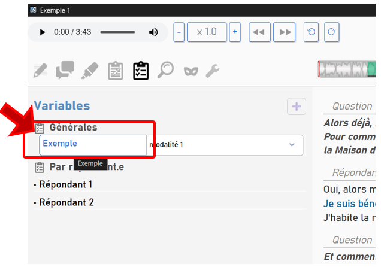
4.3 Supprimer une variable
Le bouton supprimer, en bas du menu de création et d'édition des variables, supprime définitivement la variable. Cette action est irréversible, réfléchissez-y à deux fois.
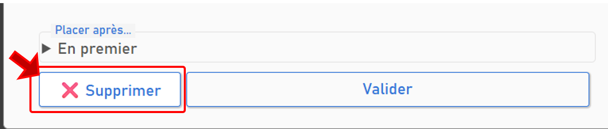
4.4 Exporter la base de données
Les variables et modalités que vous remplissez vous permettront de retrouver très rapidement les informations essentielles sur vos répondants, mais bien remplir sa base de données permet aussi et surtout de pouvoir générer un tableau synthétique présentant tous vos entretiens, utile en fin de recherche et généralement demandé en annexes dans les mémoires universitaires.
Cliquez sur « exporter » en haut à droite de la fenêtre de gestion de la base de données. Sonal génère un fichier csv, que vous pourrez ouvrir dans un tableur.
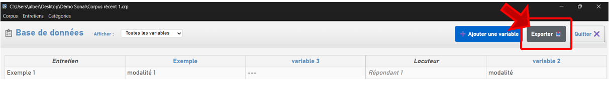